论文：Context Matters: A Theory of Semantic Discriminability for Perceptual Encoding
作者：Kushin Mukherjee, Brian Yin, Brianne Sherman, Laurent Lessard, Karen Schloss
发表：VIS 2021
人们在颜色和概念之间的关联会影响他们在信息可视化中解释颜色含义的能力。以前的工作表明，这种影响仅限于与颜色具有强烈、特定关联的概念。然而，尽管一个概念可能与任何颜色都没有很强的关联，但它的映射可以在编码系统中的其他概念的上下文中消除歧义。我们在语义判别理论中阐明了这一观点，语义判别理论是一个用于理解确定人们何时可以从感知特征推断含义的条件的一般框架。语义辨别力是观察者可以推断出视觉特征和概念之间独特映射的程度。语义判别性理论认为，一组概念的语义判别能力受到集合中概念的特征-概念关联分布之间的差异的约束。我们定义了这个理论的形式属性，并在两个实验中测试了它的含义。结果表明，为概念集生成语义可区分颜色的能力确实受到颜色-概念关联分布之间的统计距离的限制（实验 1）。此外，人们可以解释条形图中颜色的含义，只要颜色在语义上是可区分的，即使对于以前被认为是“不可着色”的概念（实验 2）。结果表明，颜色对于视觉交流比以前认为的更强大。
背景介绍
香蕉-黄色，蓝莓-蓝色，哈密瓜-橙色。当这些可视化表示具有特定、强烈关联色彩的概念时，色彩的语义会影响大家解释可视化的能力（比如水果）。这样的可视化会更容易解释如果概念用强烈相关的颜色编码（比如香蕉编码黄色而不是蓝色）。
现有的研究显示，人类从颜色推断含义的能力比我们之前认为的更鲁棒。特别是当颜色在语义上可区分时。
semantic discriminability：能不能推断出颜色和概念之间的唯一映射
semantic interpretability 语义可解释性：能不能解释颜色和概念之间的正确映射，在编码系统中指定
关键问题是，是什么决定了是否可能为一系列的概念选择语义上可区分的颜色？
我们提出了语义可区分性理论来解决这个问题，一种新的约束理论，用于为将感知特征映射到概念的编码系统生成语义可区分的感知特征。我们测试了从理论中提出的两个假设：
- 为一系列概念创造语义可区分的调色板的能力，依赖于概念之间的颜色-概念的关联分布的差异，独立于孤立考虑概念的性质。——实验 1
- 人们可以准确地解释颜色和之前被认为不可着色的概念之间的映射，在一定程度上颜色是语义可区分的。——实验 2
我们在这次研究中专注于颜色，但是更普遍地根据感知特征介绍这个理论，因为它有可能扩展到其他的可视特征上（比如形状，方向，视觉纹理）和其他感知模式中的特征（比如声音，气味，触觉）。
贡献点
- 定义了语义辨别理论（semantic discriminability theory）
- 并在 2 个实验中分别检验了提出的 2 个假设；
- 定义了一个新的度量
- 用来计算两个以上概念集之间的分布差异；
- 可以预测语义辨别能力（capacity for semantic discriminability）；
背景知识
颜色-概念的关联
之前的工作 - 识别与概念关联最强的少数颜色
对颜色空间子采样，一维展示，按照色调和色度排列
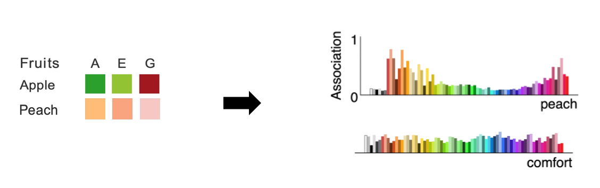
着色性分数
如何定义着色性？
- 用着色性分数来定义
- 参与者匹配颜色-概念，平均分生成着色性分数
- 用 Google N-gram 确定概念-颜色在语料库出现的频率
局限：孤立地考虑颜色-概念的关联
分配推理
_K.B.Schloss, L.Lessard, C.S.Walmsley, and K.Foley. Color inference in visual communication: the meaning of colors in recycling. Cognitive Research: Principles and Implications, 3(1):5, 2018._
- isolated merit function $m_{ij}:=a_{ij}$
balanced merit function 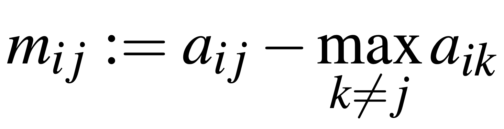
随机的，不同个体或同个体不同时间分配结果可能不一致
语义辨别性
- 即分配推理中分配的鲁棒性
_K.B.Schloss, Z.Leggon, and L.Lessard. Semantic discriminability for visual communication. IEEE Transactions on Visualization and Computer Graphics, 27(2):1022–1031, 2021._
语义辨别理论
Notions
- 特征源 – e.g. 色彩空间 CIELAB
- 特征库 – e.g. UW-71 colors
- 特征集 ————————————————— 概念集
- 特征库 – e.g. UW-71 colors
特征集是选择用来编码概念集的，也叫做调色盘，如果有 n 个概念，那么特征集就包含 n 个特征。
特征-概念关联分布
对概念 j 和特征库中的特征 i 之间的关联进行归一化：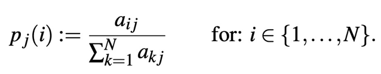
特异性
分布中的“峰值”，用熵来量化一个概念的特异性。
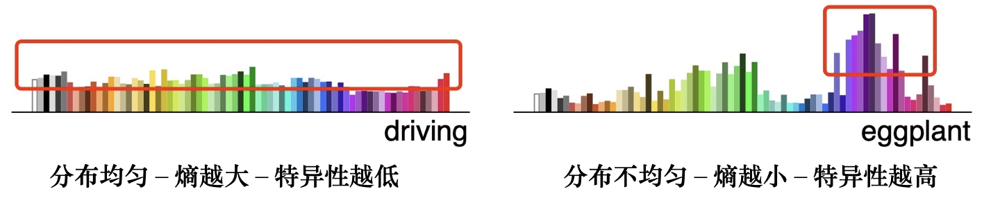
分布差异
- 量化概念之间的分布差异
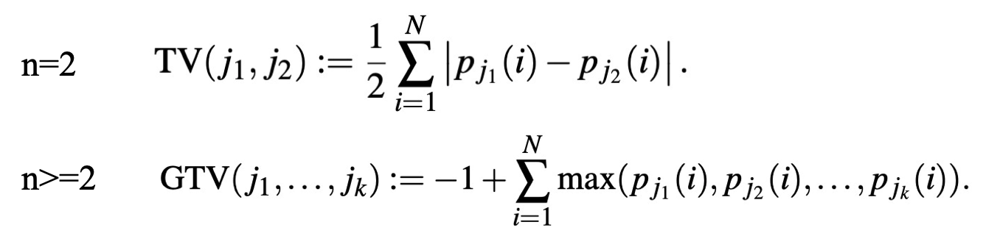
语义辨别性
语义距离
- 语义辨别力的度量标准，是作者工作提出的，分布之间的距离
- S 接近于 0 的时候，deltaX 是正是负的概率差不多的，所以分配是布鲁棒的，两种可能都有；
- S-1 时，说明 deltaX 要么总是正的要么总是负的，所以分配结果是鲁棒的。
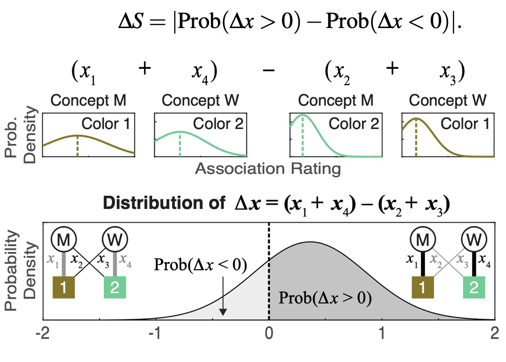
广义的语义距离
采样$x_1,…,x_{n^2}$ ，得到分配问题的答案
大量重复步骤 1，得到 _p_ _–_ 最有可能发生的分配情况发生的比例，有$1/n!\leq p \leq1$
定义$\Delta S=\frac{n!p-1}{n!-1}$
语义对比
- 获得最优分配方案 + 广义语义距离 + 计算估计每个概念给分配最优特征的次数比例
最大能力
- 给定特征库，返回对概念集来说语义辨别性最强的特征集之间的语义距离
- high max capacity — 特征库中至少有一组特征集具有高语义辨别性
- low max capacity — 不存在特征集
理论
问题—是什么决定了是否可以为一组概念选择语义可辨别的特征
是整个特征库上特征-概念关联的分布差异
一些特例：
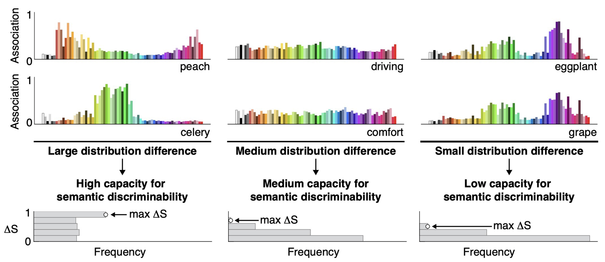
这张图显示的是分布差异和特异性之间的区别，中等容量的概念（驾驶和舒适性）的特异性远低于低容量的概念（茄子和葡萄）;
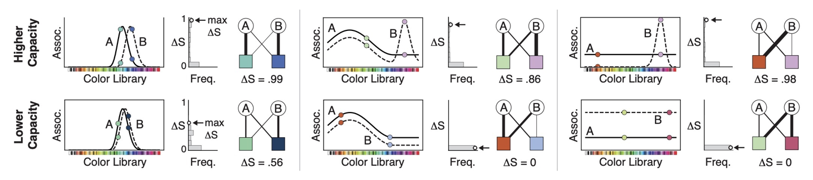
这张图右上-即使 A 没有特异性，但它和 B 之间的分布的差异很大，他们的语义可辨别性就很高。左下角这个即使 A 和 B 都具有特异性，但是他们的分布差异很小，所以语义可辨别性就低。
两张图中特定的例子表示，分布差异和特异性之间的关系的分离。这在之后的假设中会进行验证。
实验 1
假设 1:语义辨别能力是由分布差异预测的，与特异性无关；
实验设置
参与者：185 名本科生（去除 5 人）
相关设置：四大类概念(上图) —- 参与者分成四组
2-conept：在 20 个概念中任选 2 个概念—190 种
4-concpet：在 20 个概念中任选 4 个概念—4845 种
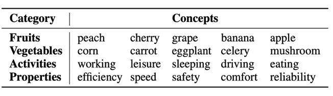
任务：每人判断 71 colors (UW-71 颜色库) * 5 concepts = 355 trials 颜色-概念的关联，拖动 slider 确认关联的强度
结果
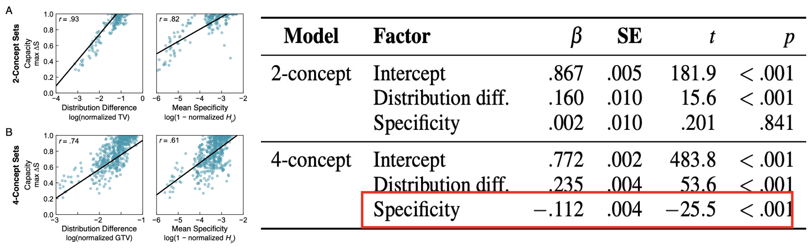
左图：分别计算分布差异（TV），平均特异性（每个集合的平均熵），和语义距离的关系画图。
语义辨别能力和分布差异、平均特异性成正相关，但平均特异性的相关程度较弱。为了检查分布差异和平均特异性是否独立于语义辨别能力，用多元线性回归模型从这两个因素预测能力，（看表里的 t-显著性）显示结果符合假设。 —- 分布差异是一个很强的显着预测因子，平均特异性不显着。因此，与平均特异性无关，平均特异性在考虑分布差异后没有贡献。
实验 2
假设 2：如果概念集有很强的语义辨别能力，就可以给一组概念分配人们可以准确理解的颜色；
实验设置
参与者：98 名（去除 catch trials 准确率不够的 8 人）
catch trials：预实验，用户需准备完全正确匹配红焕蓝绿的概念和对应颜色的柱子
分组设置：
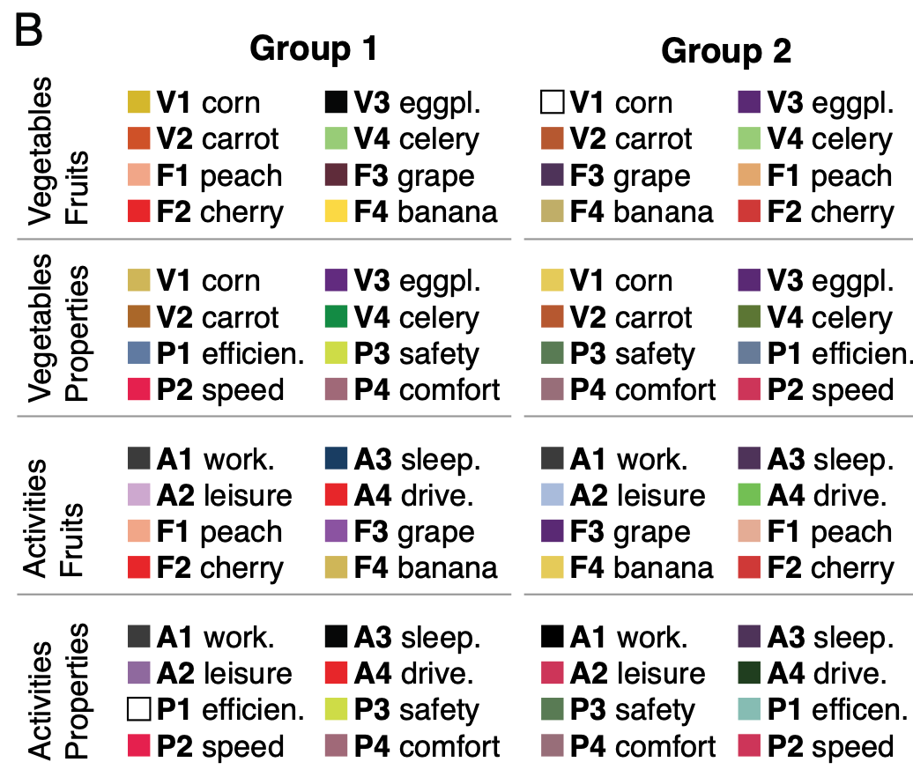
任务：正确匹配概念-颜色, 8 color-concept sets * 8 color positionings = 64 trials
结果
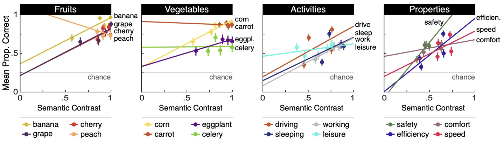
纵坐标-准确性，横坐标-语义对比
准确性随着语义对比而增加
足够的语义对比，任何概念都有可能使用颜色有意义的编码
总结
- 定义了语义辨别理论
- 实验 1—语义辨别能力是由分布差异预测的，与特异性无关；
- 实验 2-编码系统中特征的语义对比足够强，任何概念都可以用特征有意义地表示；
- 提出了产生支持足够的语义辨别能力的分布差异的准则
- 需要一些特异性
- 需要特征库具有可变性
- 需要足够大的特征库
✉️ zjuvis@cad.zju.edu.cn